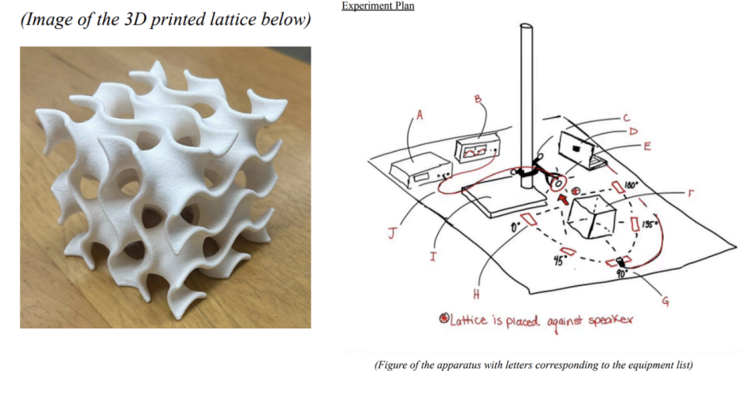
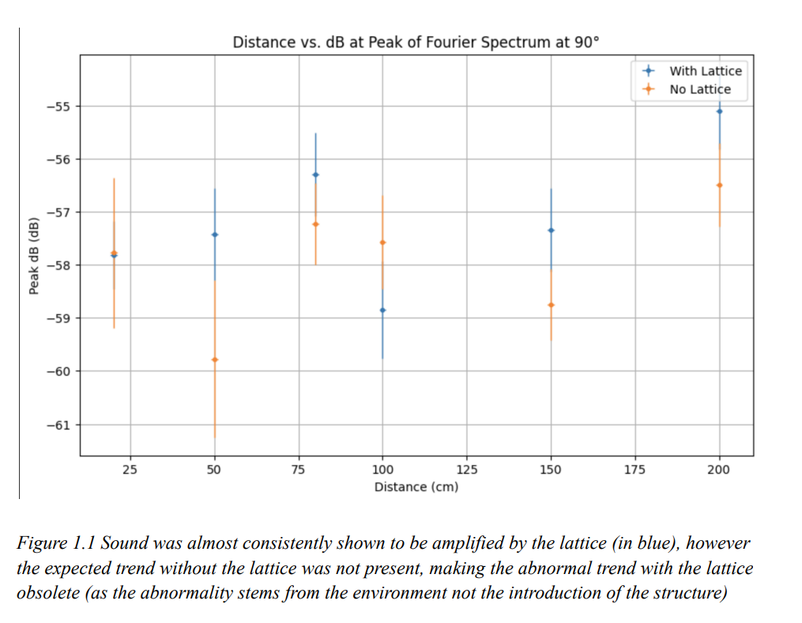
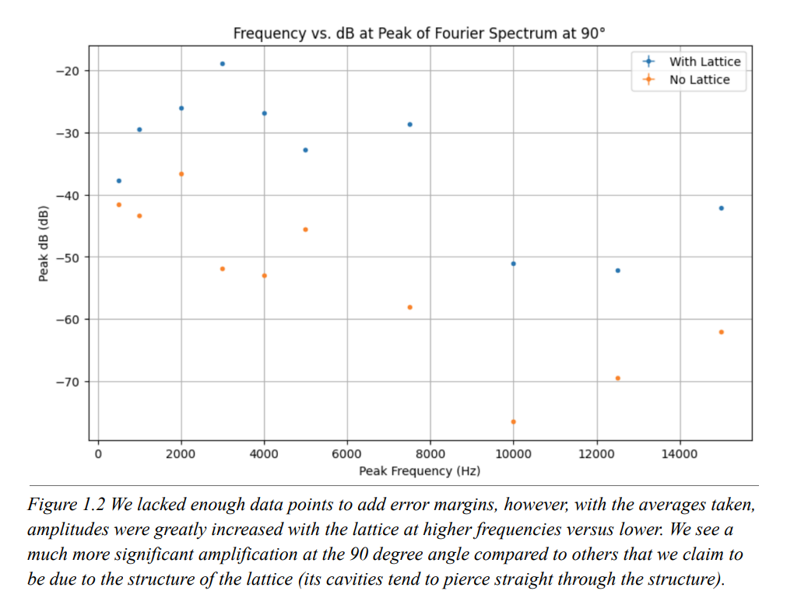
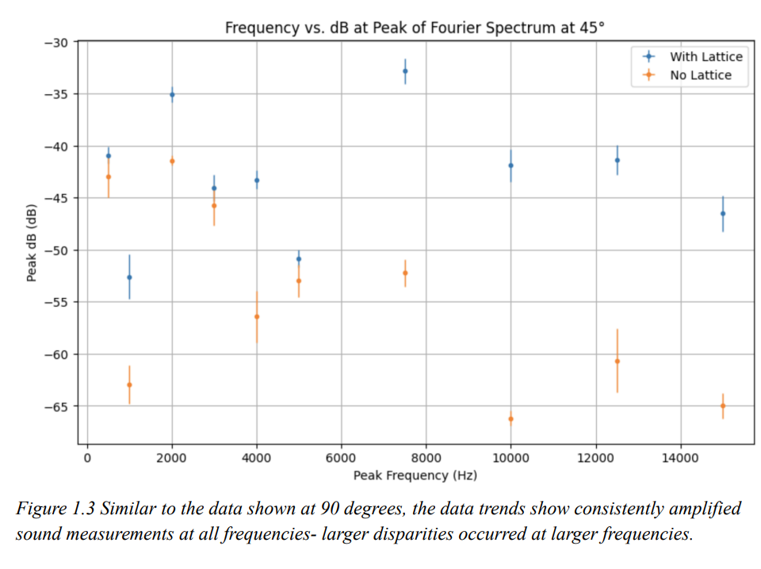
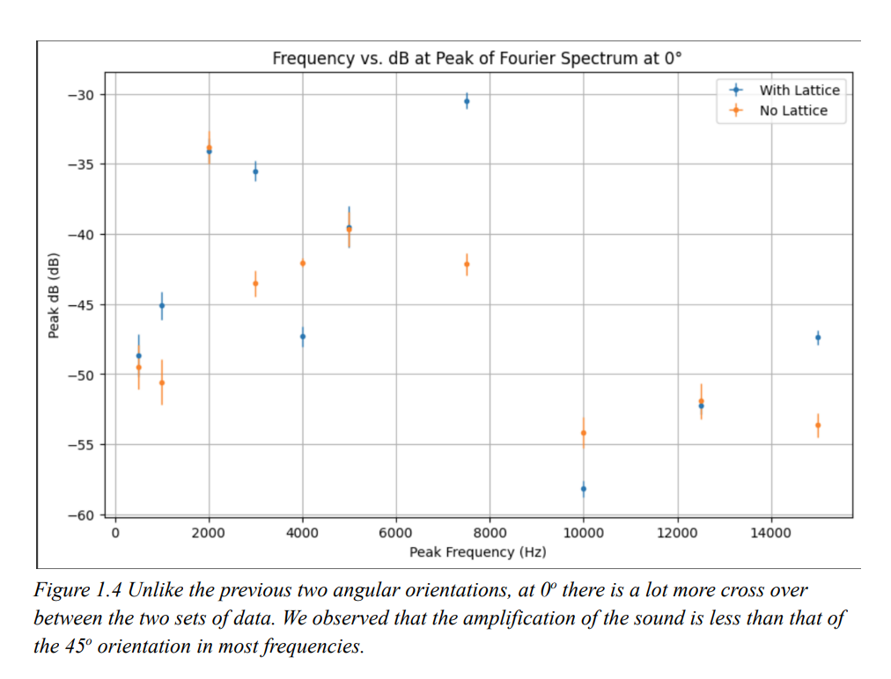

Modeling Sound Dispersion of a 3D Gyroid Lattice Structure
Keywords: 3D Gyroid Lattice | Acoustic Dispersion | Fourier Transforms | Inverse Square Law
View Full Lab Report (PDF)Overview
This experiment investigates the sound absorption behavior of a gyroid lattice structure placed between a speaker and a microphone at various frequencies and angular orientations. The gyroid lattice, known for its high surface area and complex pattern, is commonly used in speakers and headphones for sound quality improvement and noise reduction. Measurements are taken at 3 angular orientations relative to the speaker using a 3D-printed gyroid lattice obstructing the sound path. Fourier transforms of the recorded sound data are analyzed to observe frequency variations and amplitude changes. Our results ultimately challenged our predicted model of an inverse square relationship between distance and sound amplitude due to acoustic saturation in the data collection room, and demonstrated distinct angle-dependent sound dampening and amplification.
Introduction & Theory
Reducing noise pollution is a common endeavor in day-to-day functions such as class lectures that use speakers or music festivals. Headphones and speakers implement lattices to provide exceptional sound quality, reduce the intensity of noise, and reduce vibration within the speakers. The gyroid lattice is one of these lattice structures commonly used for those purposes. What makes the gyroid lattice special is its high surface area combined with its complex pattern that makes it useful for energy absorption and dispersion. Its surface can be graphically defined by the equation: $\sin(x)\cos(y) + \sin(y)\cos(z) + \sin(z)\cos(x) = 0$.
Building on previous experiments regarding metal lattices and microwave/sound transmission, which found relationships between amplitude, material density, and superimposed lattice layers, we opened our experiment with the question: What is the impact of a gyroid lattice positioned between a speaker and a microphone if we measured decibels across different frequencies by the microphone situated at different angular orientations relative to the speaker?
Apparatus and Methods

We utilized several pieces of equipment to achieve this experiment: Function Generator (A), Oscilloscope(B), Coax to Alligator Clip Cable(F), Speaker of diameter 5.5 cm(E), Audacity Computer Software(D), 3D printed gyroid lattice structure (83mm cube, see above)(F), Ring stand and clamp(I), Protractor and string, Microphone(G), Tape, and Marking Tape(H). (Image of the 3D printed lattice below) The speaker was clamped to a ring stand and connected to a function generator.
We used a string and protractor to measure the angles $0^\circ$, $45^\circ$, and $90^\circ$ relative to the speaker, and measured distances of 20, 50, 80, 100, 150, and 200 cm with a meter stick. A microphone recorded the speaker's sound output from each marked location, and data was recorded using Audacity to output Fourier transforms describing the detected frequencies and their amplitudes. We tested frequency values ranging incrementally from 500 Hz to 15,000 Hz. At each increment, we recorded the sound at a single angle around the speaker coming through the lattice, and then relocated the microphone to begin the process again. The process was repeated with the lattice absent, and the two cases were compared.
Results and Analysis
The data in all cases showed a significant amplification of sound with the lattice present at each angle. At the $90^\circ$ and $45^\circ$ positions, we observed a much more consistent amplification, with the most notable difference being that at $45^\circ$ there was slightly less amplification overall. In comparison, the $0^\circ$ position lacked a definitive difference at several frequencies (such as 2kHz, 5kHz, and 12.5kHz) and obtained a much weaker correlation between frequency and amplification, seeing a larger amplification at the median frequency value of 7.5kHz.


Furthermore, we noticed the inverse square model was not satisfied in our distance versus decibels measurements. We expected a consistent 3-decibel drop as distance increased, assuming a spherical distribution of sound from the speaker. However, this model was not observed in the recorded data and seemed to increase instead at the farthest distance, which we attribute to the room becoming saturated with sound.


Conclusion
In summary, the lattice quantitatively enhanced the volume of the speaker at varying angles almost consistently throughout the range of frequencies. Lattice structures have been observed for their property to amplify sound, therefore our results matched those expectations. Furthermore, our second data set, which included volume versus distance, did not seem to fit the inverse square model we anticipated. With the peak decibel reading occurring at the furthest distance, it is fair to assume that the room became saturated with sound causing an unusual dispersion relation. While our predicted model may work in an ideal open-air setup, we have shown that this model is not practical for use in common enclosed spaces.